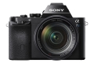
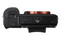
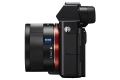
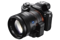
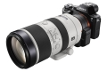
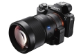
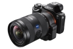
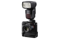
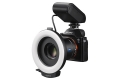

器材库 > 35mm画幅可换镜头数码相机 > α7S

规格总览
产品类型
35mm画幅可换镜头数码相机
发布日期
2014-04-25
影像规格
影像传感器
Exmor CMOS
有效像素
1220万
影像处理器
BIONZ X
镜头和对焦
镜头卡口
Sony E
对焦系统类型
快速智能自动对焦（进化的对比度检测自动对焦）
曝光控制
测光系统
1200区测光
ISO感光度
ISO 100-102400，可以扩展至ISO 50-409600
连拍
速度优先连拍模式下：每秒5张
取景器/显示屏
取景器
XGA OLED Tru-Finder 电子取景器
取景范围
100%
文件输入/输出
无线功能
Wi-Fi, NFC
机身规格
颜色
黑色
尺寸
126.9×94.4×48.2mm
重量
446g
topzhao20012015-12-01 09:14
浮世君2014-12-22 22:454.94 分
操作性 5.00功能性 5.00美观性 5.00趣味性 5.00耐用性 4.50性价比 5.00解像力 5.00色彩还原 5.00
thambar2014-10-19 21:094.94 分
操作性 5.00功能性 5.00美观性 4.50趣味性 5.00耐用性 5.00性价比 5.00解像力 5.00色彩还原 5.00
sleevefish2014-09-27 22:584.44 分
操作性 4.50功能性 5.00美观性 4.50趣味性 5.00耐用性 4.50性价比 4.00解像力 3.50色彩还原 4.50
RX2002014-06-30 04:164.44 分
操作性 4.50功能性 4.50美观性 4.00趣味性 4.50耐用性 4.50性价比 4.50解像力 4.50色彩还原 4.50
sep302302014-06-08 16:404.75 分
操作性 5.00功能性 5.00美观性 4.00趣味性 4.50耐用性 4.50性价比 5.00解像力 5.00色彩还原 5.00
产品图 / 样片
α7S

α7S

α7S

α7S

α7S

α7S

α7S

α7S

α7S
评测 / 相关文章
- 详细内容 （存档）
- 暗夜神器 索尼α7S详细评测 （存档）
- ［试用］新鲜咖啡DIY《速食主义2》A7S首个4K短片 （存档）
- ［试用］高感臻至完美 索尼4K无反A7s海外评测 （存档）
- ［试用］入手索尼A7S晒开箱 （存档）
- ［试用］真正的旁轴镜头转接利器：索尼A7S点评 （存档）
- ［试用］尝试用A7S的照片风格拍美食DIY短片 （存档）
- ［资讯］感光度得分第一 索尼A7S DxO得分已出 （存档）
- ［资讯］全画幅微单索尼α7S官方样片欣赏 （存档）